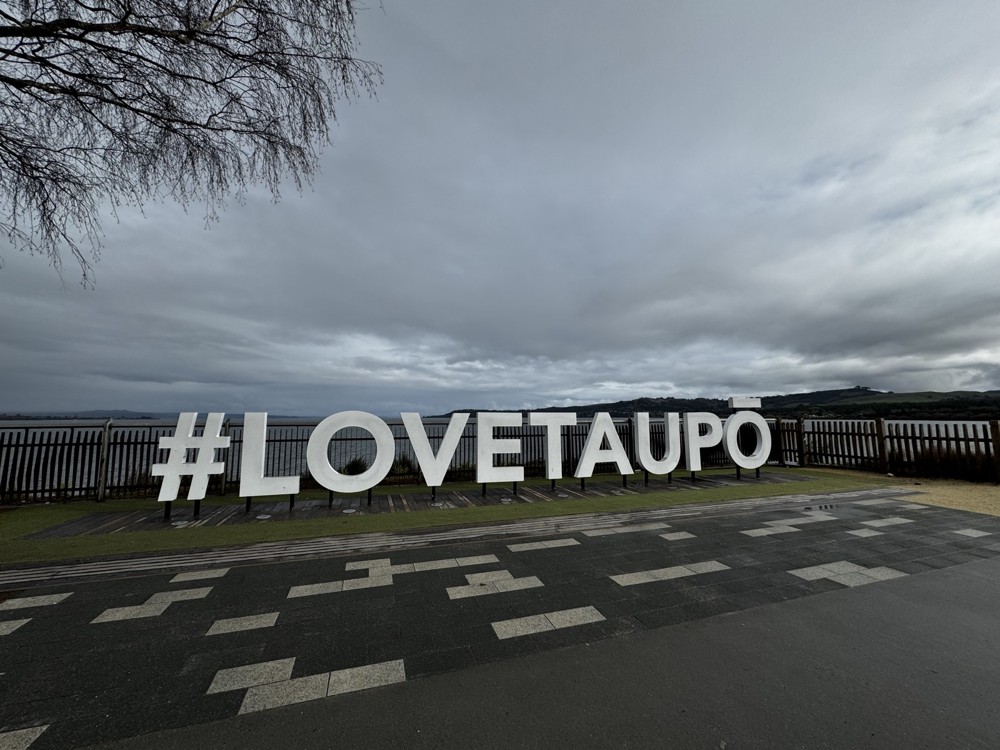
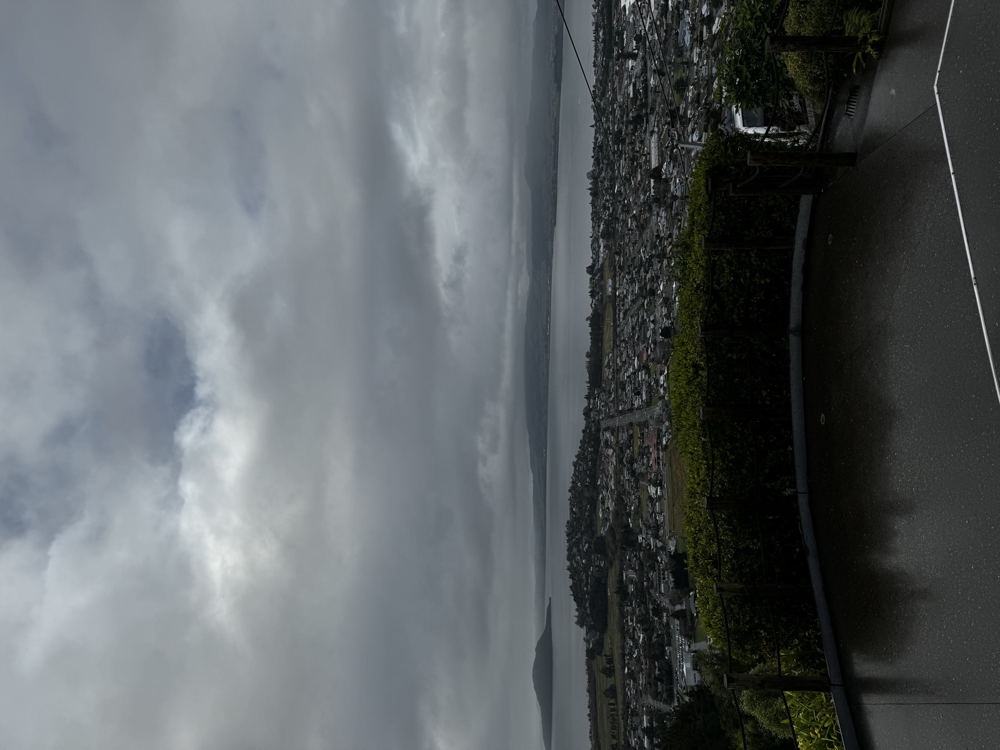
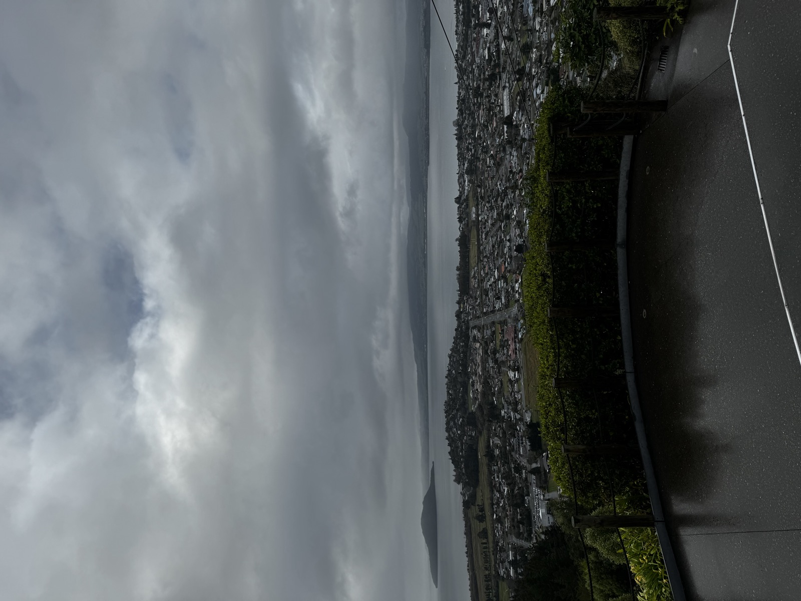

Best for
Starting a route with landscape mood rather than city energy.
New Zealand / Rotorua and Taupo / Jul 2024
Rotorua and Taupo became the moody opening chapter: geothermal ground, damp weather, cold lake views, and the feeling that the route had properly left the arrival city behind.
This page works best as atmosphere rather than a checklist. It is the part of the route where the trip begins to feel like New Zealand: steam, wet roads, heavy clouds, and water that looks colder than expected.

The first chapter was not sunny, but that made it more memorable.
Some road-trip days do not need one giant highlight. Rotorua and Taupo worked because the mood was already there from the start: grey light, geothermal texture, rain near the lake, and a softer rhythm after arrival.
The page keeps the logistics light and focuses on what is useful to remember: this is a good opening chapter if you want the route to begin with weather, landscape, and slow visual texture.
Rotorua and Taupo, in moments
A short visual route through steam, clouds, rain, and lake views before the trip moves west.
Steam
Rock, steam, grey light, and the first properly atmospheric stop.

Lake stopA public, simple marker for the lake chapter.

RainA muted road-side pause that suits the winter route.

WeatherThe lake did not need sunshine to stay memorable.
The lake did not need sunshine to work. The grey weather gave it a softer, colder personality.
Rotorua and Taupo note
Geothermal
The geothermal stop had that slightly unreal New Zealand texture: steam, rock, grey light, and a winter sky pressing everything down. It was not a bright postcard day, but the mood was better because of it.
Lake Taupo
The lakefront was more muted than sunny, with heavy clouds and a little rain feeling. It was the kind of stop that works best when you do not rush it too much.
Road Note
Some days on a road trip are not about one giant highlight. This one was more about the weather, the lake, the steam, and the feeling that the route was starting to open up.
Best for
Starting a route with landscape mood rather than city energy.
Personal take
Rotorua and Taupo gave the trip a strong start because the mood was already there from day one.